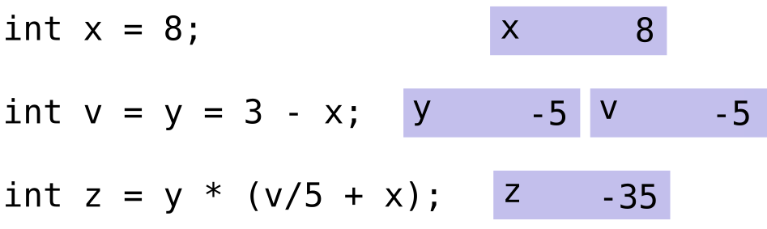

Introduction
Expressions in C++ are fundamental constructs made up of operators, constants, and variables, following the language’s syntactical rules. Every expression is a segment of a code that returns a value. For instance:

This example demonstrates the creation of variables to store values: a box for \(x\) and another for \(y\), where \(y\) equals the expression \(x + 13\) (thus, \(y = 23\)). Now, let’s delve into a more complex example:

This statement encompasses three expressions:- The results of the expression \(3 - x\) is stored in the variable \(y\)
- The expression \(y = 3 - x\) returns the value of \(y\), and it is stored in the variable \(v\)
- The results of the expression \(y \times \left(\frac{v}{5} + x\right)\) is stored in the variable \(z\)
It’s essential to remember the precedence of operations: multiplication and division are executed before addition and subtraction. For example:
1-3*4 = -11
2/3-4*2/3 = -2
2/3-4/4*2/3 = 0Operator precedence in C++ determines the sequence of operations in an expression. Operators have a specific order of execution relative to others. For instance, in the expression \(\frac{2}{4} - 3 + 4 \times 6\), the subexpressions \(\frac{2}{4}\)and\(4 \times 6\) are calculated first, followed by the addition and subtraction. When operators have the same precedence, their associativity dictates the order - either left-to-right or right-to-left.
Figure 1: Precedence order
Associativity specifies the order of operations for operators with the same precedence level. It can be left-to-right or right-to-left. Typically, addition, subtraction, multiplication, and division are left-associative, while assignment operators are right-associative. Some operators are non-associative, meaning their behaviour is undefined if used sequentially in an expression. Parentheses can alter the default associativity, enforcing a specific order.
Figure 2: Example of left-associative, right-associative, and non-associative